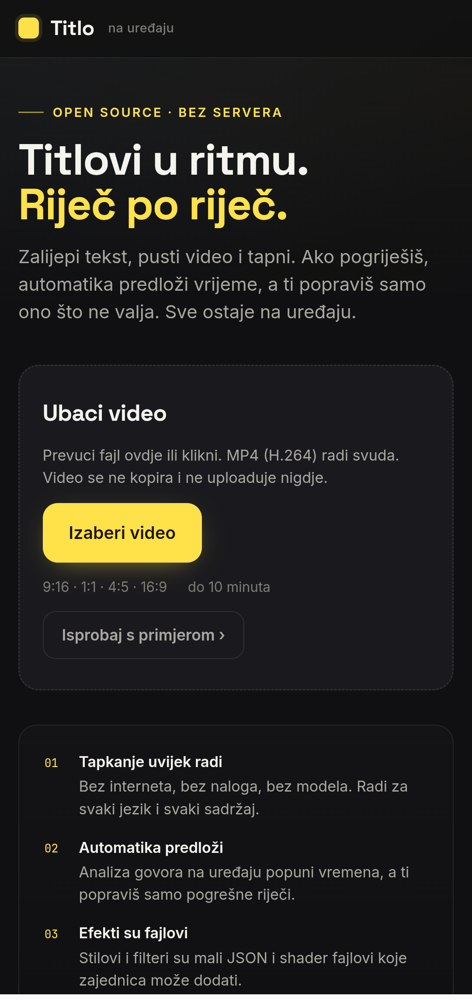
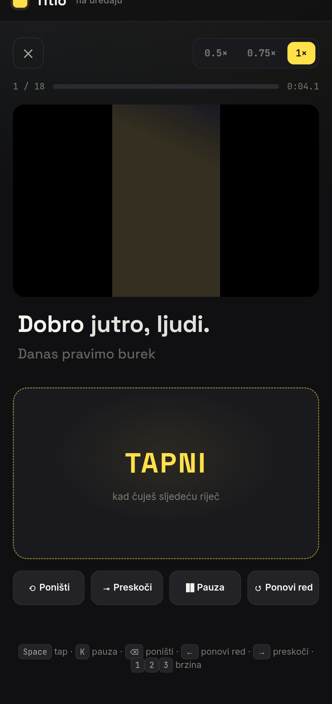

open source · MPL-2.0
Captions that
land on the word.
Animated word-by-word captions and filters for short videos. Tap to time, fix one word, export MP4. No server, no account, nothing uploaded.
→ github.com/ermin1990/Titlo


MP4 · 1080p